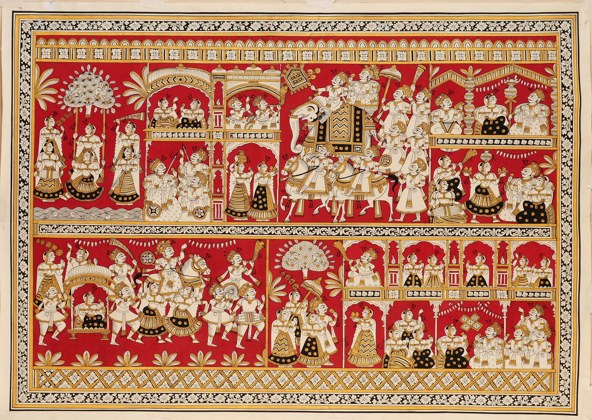

Phad painting feels like a story that refuses to stay still. Unlike other paintings, this isn’t just meant to be seen—it’s meant to be performed. The long scroll unfolds like a journey, revealing scene after scene. The romance here is epic and devotional. It tells tales of local heroes and gods, filled with bravery, sacrifice, and faith. Under the night sky, when the painting is opened and sung aloud, it feels like the past comes alive—a moving story of devotion and legend.
Phad painting originates from Rajasthan and is closely linked to storytelling traditions. • Traditionally used to narrate stories of folk deities like Pabuji and Devnarayan • Painted on long cloth scrolls called “Phad” • Used by priest-singers known as Bhopa and Bhopi These paintings were not static art—they were part of mobile temples, carried from village to village to narrate sacred stories.
Phad painting has a very distinctive style: • Scroll Format Long horizontal cloth that tells a continuous story • Bright Natural Colors Orange, red, yellow, green—very vibrant • No Empty Space Entire surface is filled with figures and scenes • Hierarchical Composition Important figures are drawn larger than others • Flat Perspective Focus is on storytelling, not realism • Sequential Narrative Events shown in order, like a visual timeline
Phad paintings are traditionally made by the Joshi family of painters in Rajasthan. • Art passed down through generations • Requires deep knowledge of stories and symbolism • Painters work closely with storytellers (Bhopas) This makes Phad a combination of art, music, and storytelling tradition.